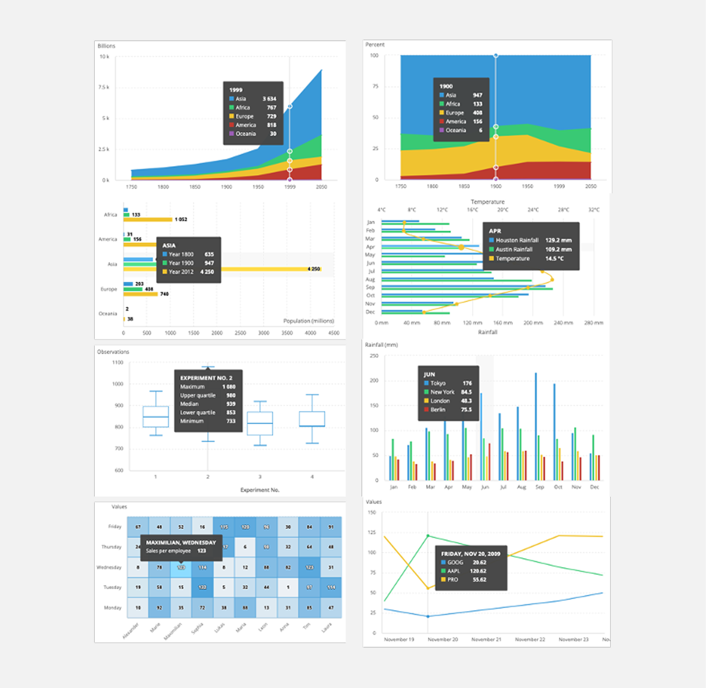
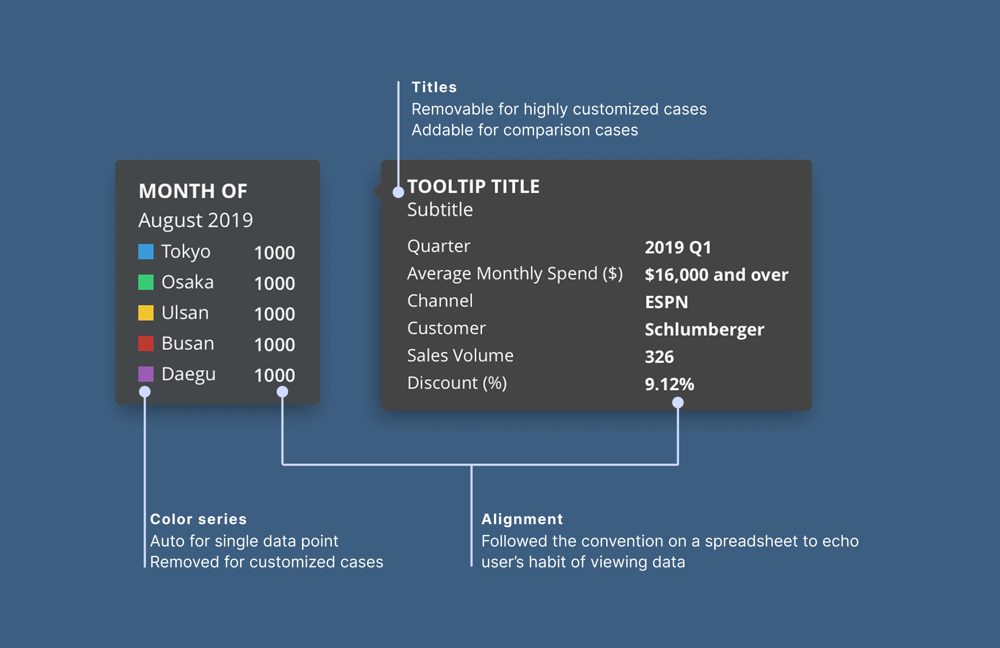

Unified the enterprise user experience through a scalable design system, achieving accessibility and platform consistency to accelerate new product adoption.
PROS built enterprise pricing optimization software for airlines and retail companies—complex data-heavy products where pricing analysts needed to execute strategies, analyze performance, and discover revenue opportunities.
Early in my career, as a UI designer, my role was to govern the "source of truth" across 54 components to ensure the organization could scale without accruing design and engineering debt. This was a critical part of PROS migration strategy to cloud based system.
Here were a few highlights of the achievements:
Discrepancies between Sketch files, documentation, and the code library were generating many UI fix tickets, and slowing down sprint velocity.
I led a gap analysis of 132 component variants, identifying misalignments that caused friction during handoffs.
I drove an alignment process that moved 20+ core components into full parity across design and production, eliminating average 60% UI fix tickets per sprint.


Standardizing complex data visualization tools for pricing analysis without sacrificing technical feasibility.
I acted as the bridge between user-centered standards and architectural constraints.
I standardized a universal tooltip pattern across 19 chart types across 4 product lines. I enabled developers to stop building one-off customizations, directly increasing their implementation speed.
When teams requested custom components, I functioned as a "system consultant"—evaluating the frequency of the need and proposing existing patterns to prevent library fragmentation.
I ensured 100% of my components met WCAG AA standards, recognizing that accessibility is a non-negotiable requirement for enterprise-grade SaaS.